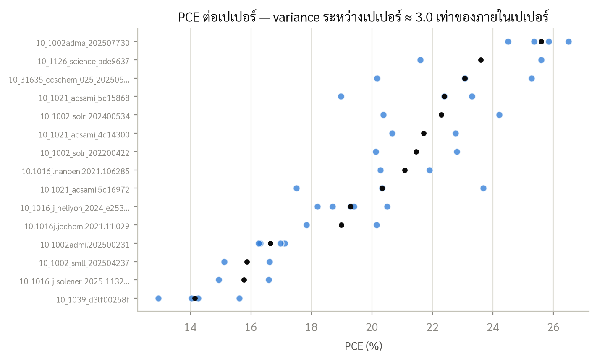
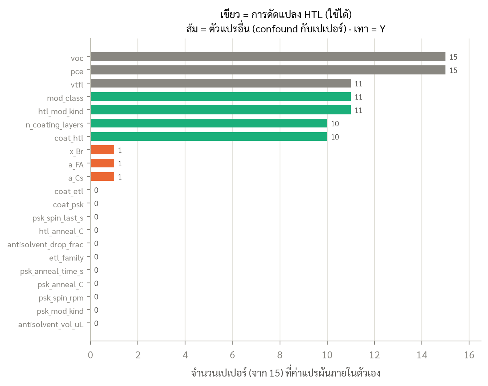
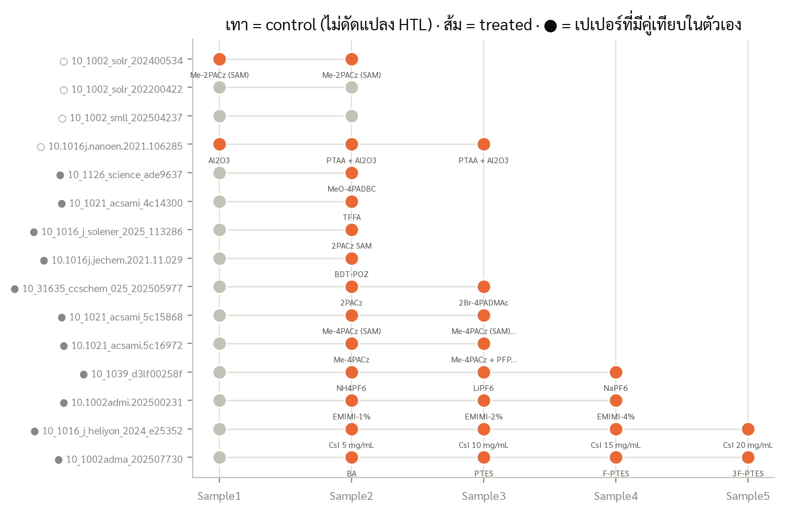
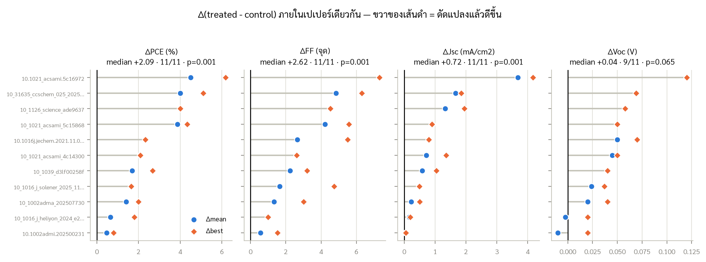
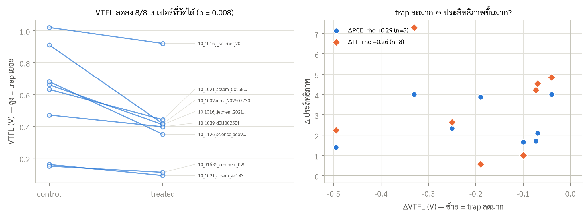
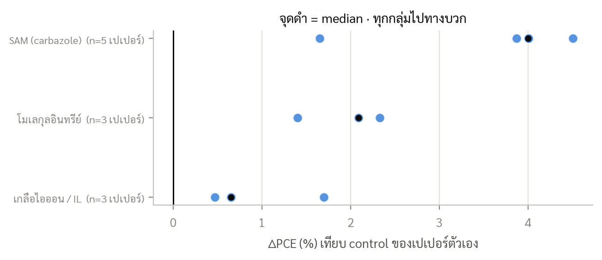
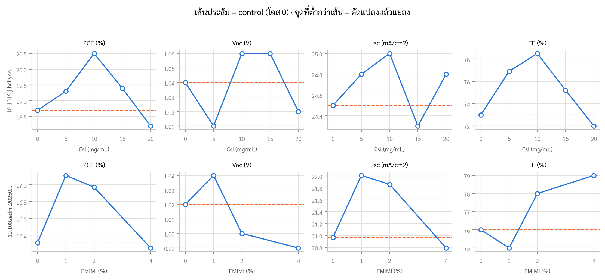

จากไฟล์ Excel 44 ไฟล์ ถึงชุดข้อมูลที่พร้อมสร้างแบบจำลอง
พร้อมข้อจำกัดเชิงโครงสร้างที่พบ และคำถามวิจัยที่ปรับให้ตรงกับสิ่งที่ข้อมูลตอบได้
คุณภาพข้อมูลไม่ใช่ปัญหาแล้ว — ทุกค่าผ่านการคลีนและตรวจย้อนกับเปเปอร์ต้นฉบับ ปัญหาที่เหลือคือโครงสร้างของข้อมูล: นักวิจัยแต่ละกลุ่มตั้งค่าพารามิเตอร์การผลิตไว้คงที่ แล้วแปรเฉพาะสารที่ใช้ดัดแปลงผิว HTL ทำให้พารามิเตอร์เชิงตัวเลขทุกตัว (ความเร็วปั่น อุณหภูมิอบ จังหวะ antisolvent) แยกไม่ออกจากตัวตนของเปเปอร์ คำถามวิจัยจึงปรับจาก “พารามิเตอร์ตัวไหนขับคุณภาพผลึก” เป็น “การดัดแปลงผิว HTL ช่วยจริงไหม และทำงานผ่านกลไกใด” ซึ่งตอบได้ด้วยการเทียบ A/B ภายในแล็บเดียวกัน 11 เปเปอร์ และผลเบื้องต้นชัดเจนมาก
ข้อมูลตั้งต้นคือไฟล์ Excel 44 ไฟล์ (1 ไฟล์ = 1 device, ไฟล์ละ 6 ชีต) ที่สกัดด้วยมือจากเปเปอร์ 15 ฉบับ เป้าหมายของขั้นนี้คือแปลงให้เป็นตารางเดียวที่ 1 แถว = 1 device พร้อมป้อนแบบจำลอง โดยทุกการตัดสินใจต้องตรวจสอบย้อนกลับได้
explore_reschema.ipynb — แตกชีตเป็นตาราง normalizeprocessed/normalize/ 7 ตารางcolumn_prepare.ipynb — คลีนคอลัมน์ทีละเรื่อง (102 cells)processed/prepared/ + audit trail ใน processed/audit/recheck_comlumn_preapare.ipynb — ตรวจซ้ำ + สร้างตารางเป้าหมาย| หมวด | สิ่งที่แก้ | ประเด็นสำคัญ |
|---|---|---|
| A | Unicode ปะปน (μ กรีก กับ µ micro), ช่องว่างเกิน | ทำให้ค่าที่ควรเป็นตัวเดียวกันถูกนับแยก |
| B–C | คำสะกดผิด และสะกดต่างกัน (ตัวพิมพ์/วรรคตอน) | ยุบเข้าตารางชื่อมาตรฐาน (canonical map) |
| D–E | แปลง thickness_nm เป็นตัวเลข | รวมการแปลงหน่วย Å→nm และค่าที่กรอกเป็นช่วง |
| F, L | เสถียรภาพ: อุณหภูมิ/ความชื้น/retention เป็นตัวเลข | retention เพิ่มจาก 24 เป็น 28 devices จากการพบรูปแบบ percent ของ Excel |
| G | แปลงความบริสุทธิ์ของสารจากผู้ขาย | เก็บไว้ตรวจสอบที่มาของสาร ไม่ได้ใช้เป็นตัวแปรต้น |
| H | จัดกลุ่มตระกูลวัสดุ material_family | ค่าว่างมีความหมายต่างกันตามชั้น ไม่ใช่ข้อมูลตกหล่น |
| I | หน่วยของค่าที่วัดผิด | ตรวจแล้ว 15 แถวที่สงสัยเป็นค่าที่ถูกต้อง |
| J | สูตรเคมีของชั้นดูดแสง (a_Cs a_FA x_Br) | คำนวณจาก 2 แหล่งอิสระ: สูตรที่เปเปอร์เขียน และคำนวณย้อนจากสารตั้งต้น (โมล/มวล÷น้ำหนักโมเลกุล) ตรงกัน 13/15 เปเปอร์ ครบ 44/44 devices |
| K | ตัวทำละลาย 27 แบบ → 16 ระบบ | แตกเป็น solvent_1/2 พร้อมอัตราส่วนเชิงตัวเลข |
1.0 กับ 1) — พอนำสองตารางมาต่อกันจึงจับคู่ไม่ติดแม้แต่แถวเดียว และโปรแกรมไม่ฟ้องอะไรเลย เป็นข้อผิดพลาดชนิดที่อันตรายที่สุดเพราะไม่มีสัญญาณเตือนPCE ≠ Voc×Jsc×FF/100 คลาดสูงสุด 1.64 หลังบังคับให้เลือกจากชุดเดียวกันเหลือ 0.503
audit_report.pdf ข้อค้นพบ O และ Vเลือกเปเปอร์ตัวอย่าง 1 ฉบับ (Tirado et al., Adv. Mater. Interfaces 2025, open access) แล้วเปิดทั้งตัวเปเปอร์และไฟล์ Supporting Information ไล่เทียบทุกค่าที่สกัดมา
| สิ่งที่เทียบ | แหล่งในเปเปอร์ | ผล |
|---|---|---|
| Voc, Jsc, FF, PCE, Rs ของ 4 device | Table 1 | 20/20 |
| อายุพาหะ TRPL และความกว้างสเปกตรัม | Table 2 | 8/8 |
| สูตรเคมีชั้นดูดแสง, โครงสร้างชั้น, ความหนา, เงื่อนไขทดสอบเสถียรภาพ | เนื้อความหัวข้อ 2 | ตรงทั้งหมด |
| สารตั้งต้น 5 ชนิด, ตัวทำละลาย, ขั้นตอนปั่นเคลือบ, ความหนาชั้นระเหย, สูตรสังเคราะห์ NiOx | ข้อมูลเสริม หัวข้อ 1.1–1.2 | 12/12 |
| รวม | เทียบทีละค่า | 30/30 |
พิสูจน์ว่า การคลีนไม่ได้ทำค่าเพี้ยน — ทั้งการแปลง FF จากเศษส่วนเป็นเปอร์เซ็นต์ การอ่านค่าความหนาที่เขียนเป็นช่วง การแตกสูตร ABX₃ และการจัดชั้นให้ถูกตำแหน่ง ผ่านการเทียบกับต้นทางจริงหมด
สิ่งที่เจอเพิ่ม — SI ระบุค่าที่ขัดกับข้อมูลเดิม 3 จุด และแก้ตามหลักฐานแล้ว: เวลาอบ 30 นาที (ค่าเดิมมีเคสที่กรอกเป็น 30 ชั่วโมง), เวลาพลาสมา 10 นาที (ค่าที่เดาไว้ก่อนหน้าผิด), และค่าแถบพลังงานรายตัวอย่างจาก Tauc plot ผลข้างเคียงคือ ค่าผิดปกติของเวลาอบหายไป ทำให้ทั้งชุดข้อมูลมีค่ากลาง 1800 วินาที สูงสุด 3600 วินาที ซึ่งสมเหตุสมผลทางกายภาพทั้งหมด
บทเรียนที่สำคัญกว่า — ในอีกเปเปอร์หนึ่งพบว่าไฟล์ Excel ของเรากรอกตรงตามต้นฉบับทุกตัว แต่หลักฐานทางฟิสิกส์ 4 ชั้นชี้ว่าตัวเปเปอร์เองพิมพ์ผิด (0.7 M ที่ควรเป็น 0.07 M) การตรวจสอบจึงต้องไปถึงระดับ “ค่านี้เป็นไปได้ทางฟิสิกส์ไหม” ไม่ใช่แค่ “ตรงกับต้นฉบับไหม”
ชื่อไฟล์เป็นชื่อจริงบนดิสก์ อยู่ในโฟลเดอร์ processed/prepared_v2/ ใช้อ้างอิงเวลาเปิดไฟล์หรือคุยกับคนที่มาทำต่อ
| ไฟล์ | ขนาด | บทบาท |
|---|---|---|
| target_table.csvตารางหลัก | 44 × 43 | ตารางหลักสำหรับสร้างแบบจำลอง — 1 แถว = 1 อุปกรณ์ ฝังการตัดสินใจทุกข้อไว้แล้ว (เลือกค่า J–V จากชุดเดียวกัน, เติม 0 ให้ไอออนที่ไม่อยู่ในสูตร, แยกจุดอ้างอิงเวลาของ antisolvent) |
| process.csvขั้นตอนการผลิต | 702 × 71 | ทุกขั้นตอนการผลิตแยกตามชั้น + พารามิเตอร์ที่แตกเป็นคอลัมน์ 53 ตัว + ร่องรอยการแก้ทุกครั้ง |
| properties.csvค่าที่วัดได้ | 563 × 16 | ค่าที่เปเปอร์รายงาน แยกชื่อค่าที่วัดออกจากเงื่อนไขการวัด พร้อมตัวเลขที่แปลงแล้ว |
| materials.csvสารตั้งต้น | 543 × 13 | สารตั้งต้นรายชั้น + ระบบตัวทำละลาย |
| layers.csvชั้นของเซลล์ | 352 × 11 | วัสดุรายชั้น + ความหนา + ชนิดชั้น (หลัก/เคลือบ/additive) |
| vendors.csvแหล่งซื้อสาร | 644 × 8 | แหล่งซื้อและความบริสุทธิ์ — ไว้ตรวจสอบที่มา ไม่ใช่ตัวแปรในแบบจำลอง |
| stability.csvการทดสอบเสถียรภาพ | 62 × 20 | 1 แถว = 1 การทดสอบ (อุปกรณ์เดียวมีได้หลายเงื่อนไข) |
| psk_composition.csvสูตรเคมีชั้นดูดแสง | 44 × 11 | สูตรเคมีครบทุกไอออน + ที่มา + ผลเทียบ 2 แหล่ง — เป็นหลักฐานสำหรับเขียนระเบียบวิธี |
| devices.csv · device_layer_flags.csvทะเบียนอุปกรณ์ | 44 × 13 · 44 × 10 | ทะเบียนอุปกรณ์และธงบอกโครงสร้างชั้น |
EDA แบ่งเป็นสองระดับ: ระดับแรกสำรวจภาพรวมทั้งชุด ระดับที่สองเจาะเฉพาะคำถามที่ข้อมูลตอบได้จริง สิ่งที่พบในระดับแรกคือเหตุผลทั้งหมดที่ทำให้ต้องมีระดับที่สอง
| กลุ่ม | ตัวแปร | จำนวน device |
|---|---|---|
| ผลลัพธ์ (Y) | voc jsc ff pceแรงดัน · กระแส · ความสมบูรณ์ของกราฟ · ประสิทธิภาพรวม — สี่ค่านี้เลือกจากชุดเดียวกันเสมอ | 43 · 42 |
| ตัวแปรคั่นกลาง | vtflแรงดันที่ใช้เติมกับดักให้เต็ม — ตัวแทนความหนาแน่นกับดักพาหะ | 28 |
trap_density · rs · rrecความหนาแน่นกับดัก · ความต้านทานอนุกรม · ความต้านทาน recombination | 22 · 22 · 15 | |
| เสถียรภาพ | retention_25c · degradation_rateประสิทธิภาพที่เหลือหลังทดสอบที่ ~25 °C · อัตราการเสื่อมต่อชั่วโมง | 14 |
| พารามิเตอร์การผลิต | psk_spin_rpm psk_anneal_C psk_anneal_time_s antisolvent_vol_uL antisolvent_drop_frac htl_anneal_C ฯลฯความเร็วปั่น · อุณหภูมิและเวลาอบ · ปริมาณและจังหวะหยด antisolvent (10 คอลัมน์) | 30–43 |
| ตัวควบคุม | a_Cs a_FA x_Br · etl_familyสัดส่วน Cs, FA และ Br ในสูตรเคมี · ชนิดวัสดุชั้น ETL | 44 |
| การดัดแปลงผิว | coat_htl · htl_mod_kind · coat_pskมีการเคลือบผิว HTL หรือไม่ · เคลือบทับหรือผสมในน้ำหมึก · มีการเคลือบผิวชั้นดูดแสงหรือไม่ | 44 |
ข้อสังเกตสำคัญสองข้อ: (1) grain_size ซึ่งเป็นแกนของคำถามวิจัยเดิม มีรายงานเพียง 13/44 device
จึงใช้ vtfl เป็นตัวแทน (มี 28 device และสัมพันธ์กับความหนาแน่นกับดักโดยตรง rho +0.76)
(2) ค่าที่หายไปหายเป็นก้อนตามเปเปอร์ ไม่ได้หายแบบสุ่ม — เปเปอร์ที่ไม่วัด SCLC ก็ไม่มีทั้งเปเปอร์
จึงห้ามเติมค่าข้ามเปเปอร์เด็ดขาด
PCE = Voc × Jsc × FF / 100 — พิสูจน์จากข้อมูลจริง (สหสัมพันธ์ 0.996) การฝึกแบบจำลองทำนาย PCE ตรง ๆ
จึงไม่ให้ข้อมูลใหม่เลย ต้องฝึกสามองค์ประกอบแยกแล้วคูณกลับ ·
coat_etl และ is_coated เป็นจริงทั้ง 44 device (ทุก device มีชั้นบัฟเฟอร์อย่างน้อย BCP)
ความแปรปรวนเป็นศูนย์ ใช้เป็นตัวแปรไม่ได้ เก็บไว้ตรวจความถูกต้องเท่านั้น

หลักการพื้นฐานของการวัดผลของตัวแปรใด ๆ คือต้องมีตัวอย่างที่ ตัวแปรนั้นต่างกัน แต่อย่างอื่นเหมือนกัน ในชุดข้อมูลนี้ “อย่างอื่นเหมือนกัน” มีทางเดียวคืออยู่ในเปเปอร์เดียวกัน (แล็บเดียว คนเดียว เครื่องเดียว ล็อตสารเคมีเดียว) จึงนับว่าตัวแปรแต่ละตัวแปรค่าภายในเปเปอร์ตัวเองกี่เปเปอร์

ในแต่ละเปเปอร์ นักวิจัยตั้งสูตรการผลิตไว้คงที่ แล้วแปรเฉพาะสิ่งที่ตัวเองศึกษา และสิ่งที่วงการ p-i-n ศึกษาอยู่ในช่วงนี้พอดีคือการดัดแปลงผิว HTL (buried interface)
ผลคือ ความเร็วปั่น อุณหภูมิและเวลาอบ ปริมาณและจังหวะ antisolvent ไม่แปรค่าเลยแม้แต่เปเปอร์เดียว ตัวแปรเหล่านี้จึงเป็น “ลายนิ้วมือของเปเปอร์” อย่างสมบูรณ์ ต่อให้ตัดทั้งเปเปอร์ออกตอนทดสอบ แบบจำลองก็ยังแยกไม่ออกว่าผลที่เห็นมาจากพารามิเตอร์หรือมาจาก “แล็บไหนเป็นคนทำ”
นัยตรง: สหสัมพันธ์แรง ๆ ที่เคยเห็นในการสำรวจรอบแรก เช่น อุณหภูมิอบ HTL กับ FF (−0.74) หรือจังหวะหยด antisolvent กับ PCE (+0.52) เป็นความสัมพันธ์ระหว่างเปเปอร์ล้วน ไม่ใช่หลักฐานเชิงกลไก

หน่วยวิเคราะห์เปลี่ยนจาก device เป็น เปเปอร์: ในแต่ละเปเปอร์คำนวณผลต่างระหว่างค่าเฉลี่ยของกลุ่มที่ดัดแปลง กับค่าของ control ในเปเปอร์นั้น ได้ผลต่าง 1 ค่าต่อ 1 เปเปอร์ จึงไม่เกิดปัญหานับตัวอย่างซ้ำ รายงานสองแบบคู่กันเสมอ — Δmean (เฉลี่ยทุกกลุ่มที่ดัดแปลง รวมโดสที่ยังไม่ปรับจูน) และ Δbest (เฉพาะตัวที่ดีที่สุด ตรงกับสิ่งที่เปเปอร์เคลม)

| ตัวชี้วัด | จำนวนเปเปอร์ | ค่ากลาง Δmean | ค่ากลาง Δbest | ทิศทางที่ดี | sign test |
|---|---|---|---|---|---|
| PCE (%) | 11 | +2.09 | +2.33 | 11/11 | p = 0.001 |
| FF (จุด) | 11 | +2.65 | +4.53 | 11/11 | p = 0.001 |
| Jsc (mA/cm²) | 11 | +0.66 | +0.90 | 11/11 | p = 0.001 |
| Voc (V) | 11 | +0.045 | +0.050 | 9/11 | p = 0.065 |
| VTFL (V, ต่ำดีกว่า) | 8 | −0.145 | −0.175 | 8/8 | p = 0.008 |
| retention @25 °C (%) | 3 | +25 | +25 | 3/3 | n เล็กเกินไป |
อ่านตารางนี้ว่า: ถ้าการดัดแปลงผิว HTL ไม่มีผลจริง โอกาสที่ผลจะออกมาทางบวกครบทั้ง 11 เปเปอร์โดยบังเอิญคือประมาณ 0.1% สังเกตว่า FF เป็นทางหลักที่ผลวิ่งผ่าน (11/11 และขนาดใหญ่) มากกว่า Voc (9/11) ซึ่งสอดคล้องกับกลไกที่เกิดที่รอยต่อมากกว่ากลไกที่เกิดในเนื้อฟิล์ม
สมมติฐานเชิงกลไกคือ ดัดแปลงผิว → กับดักพาหะที่รอยต่อลดลง → FF และ Voc สูงขึ้น → PCE สูงขึ้น ตัวที่วัดกลางทางได้คือ VTFL (แรงดันที่ต้องใช้เติมกับดักให้เต็ม จากการวัดแบบ SCLC) — ค่าสูงแปลว่ากับดักเยอะ ฟิล์มแย่

กับดักลดลง 8/8 เปเปอร์อิสระ → FF เพิ่ม 11/11 → PCE เพิ่ม 11/11 นี่คือหลักฐานเชิงกลไกที่ไม่มีเปเปอร์เดี่ยวฉบับไหนใน dataset ให้ได้ เพราะแต่ละฉบับวัดกับดักของสารตัวเองในแล็บตัวเองเท่านั้น

ทุกกลุ่มไปทางบวกหมด โดย SAM นำอยู่ (ค่ากลาง +4.00 จาก 5 เปเปอร์) ตามด้วยโมเลกุลอินทรีย์ (+2.09 จาก 3 เปเปอร์) และเกลือไอออน (+0.65 จาก 3 เปเปอร์) — แต่ ยังจัดอันดับไม่ได้ เพราะแต่ละกลุ่มมีเพียง 3–5 เปเปอร์ และกลุ่มออกไซด์ (Al₂O₃) หลุดจากการเทียบไปเลย เพราะเปเปอร์เดียวที่ใช้สารนี้เคลือบทุก device จนไม่เหลือ control

ทั้งสองเปเปอร์ให้เส้นโค้งคว่ำที่มีจุดเหมาะสมชัดเจน: CsI ดีที่สุดที่ 10 mg/mL (+1.80) แต่ที่ 20 mg/mL แย่กว่าไม่ใส่เลย (−0.50) ส่วน EMIMI ดีที่สุดที่ 1% และที่ 4% ก็ต่ำกว่า control เช่นกัน
นี่เป็นหลักฐานจากข้อมูลของเราเองว่า “ดัดแปลงอะไรก็ได้แล้วจะดีขึ้น” ไม่จริง ซึ่งใช้ตอบข้อโจมตีเรื่องอคติจากการตีพิมพ์ได้โดยตรง และเป็นเหตุผลที่ต้องรายงาน Δmean คู่กับ Δbest เสมอ ไม่ใช่เลือกรายงานแค่ตัวที่ดีที่สุด
ผลต่างในหัวข้อ 2.5 จะเชื่อถือได้ก็ต่อเมื่อภายในเปเปอร์เดียวกัน ทุกอย่างนอกจากการดัดแปลงผิว HTL เหมือนกันหมด จึงไล่ตรวจ 12 ตัวแปรในทั้ง 11 เปเปอร์ ได้แก่ สัดส่วนไอออนในสูตรเคมี ชนิด ETL ธงการเคลือบชั้นอื่น ความเร็วปั่น อุณหภูมิและเวลาอบ ปริมาณและจังหวะ antisolvent และชนิดของค่า JV ที่รายงาน
ทั้ง 12 ตัวแปร คงที่ภายในทั้ง 11 เปเปอร์ที่ใช้เทียบ แปลว่าผลต่างที่วัดได้ไม่ปนกับความต่างอื่น (ตัวแปรที่แปรภายในเปเปอร์มีอยู่จริง 2 กรณี แต่อยู่ในเปเปอร์ที่ไม่มี control อยู่แล้ว จึงไม่กระทบผล)
ฉบับก่อนหน้าของรายงานนี้ระบุไว้ตรงนี้ว่า “ในทั้งชุดข้อมูลมีการเทียบเชิงตัวเลขภายในเปเปอร์อยู่กรณีเดียว —
solr_202400534 ต่างกันแค่ความเร็วปั่นจาก 5000 เป็น 1000 rpm แล้วได้ PCE เพิ่มจาก 20.37 เป็น 24.21”
ข้อความนั้นผิดและถอนคืนแล้ว
การเปิดไฟล์ Excel ต้นทางพบว่า device ทั้งสองตัวใช้โปรแกรมปั่นเหมือนกันทุกประการ (1000 rpm แล้วตามด้วย 5000 rpm) ค่า 1000 ที่ปรากฏเกิดจากขั้นตอน 5000 rpm ของ Sample2 ถูกกรอกไว้ในช่อง “คำอธิบาย” แทนช่อง “ค่าตัวเลข” ตัวสกัดจึงอ่านไม่เจอแล้วถอยไปหยิบค่าของขั้นแรกแทน
ผลที่ตามมา: psk_spin_rpm (ความเร็วปั่นเคลือบ) แปรผันภายในเปเปอร์ 0 จาก 15 ไม่ใช่ 1 จาก 15 —
ข้อสรุปหลักของบทที่ 2 (พารามิเตอร์เชิงตัวเลขทุกตัวถูกตรึงคงที่ทั้งเปเปอร์) จึงแข็งแรงขึ้น โดยไม่มีข้อยกเว้นเหลืออยู่เลย
สถานะ: แก้ที่ต้นทางแล้ว — เพิ่มขั้นตอนกู้ค่าจากช่อง “คำอธิบาย”
พร้อมการตรวจที่จะหยุดการทำงานทันทีถ้ามีตัวเลขตกค้างอยู่ในช่องนั้นอีก ·
รายละเอียดเต็มในรายงานการตรวจสอบย้อนกลับ (reports/audit_report.pdf) ข้อค้นพบ A
บทนี้แยกให้ชัดว่าอะไรที่ชุดข้อมูลนี้ตอบได้ อะไรตอบไม่ได้ และตอบไม่ได้เพราะอะไร เพื่อไม่ให้ข้อสรุปในบทถัดไปถูกโจมตีในจุดที่เรารู้ตัวอยู่แล้ว
| กลุ่มตัวแปร | แปรภายในเปเปอร์ | สถานะ |
|---|---|---|
การดัดแปลงผิว HTLcoat_htl htl_mod_kind mod_class — เคลือบผิวหรือไม่ · เคลือบทับหรือผสมในน้ำหมึก · ตระกูลของสารที่ใช้ | 10–11 / 15 | ใช้เป็นตัวแปรหลักได้ — มีการเทียบ A/B ในแล็บเดียวกันจริง |
สูตรเคมีของชั้นดูดแสงa_Cs a_FA x_Br | 1 / 15 | ใช้เป็นตัวควบคุม — ต้องใส่เข้าแบบจำลองเสมอเพราะกระทบ Voc/Jsc โดยตรงทางฟิสิกส์ |
พารามิเตอร์เชิงตัวเลขทุกตัวpsk_spin_rpm psk_anneal_C antisolvent_drop_frac ฯลฯ — ความเร็วปั่น · อุณหภูมิและเวลาอบ · จังหวะหยด antisolvent | 0 / 15 | ใช้ไม่ได้ — confound 100% กับตัวตนของเปเปอร์ |
สถาปัตยกรรมอื่นetl_family coat_psk coat_etl — ชนิดวัสดุชั้น ETL · การเคลือบผิวชั้นดูดแสง · ชั้นบัฟเฟอร์ | 0 / 15 | ใช้ไม่ได้ — เหตุผลเดียวกัน (ใส่เป็นตัวควบคุมได้ แต่ห้ามตีความ SHAP เชิงกลไก) |
| (เทียบ) ผลลัพธ์ Y | 15 / 15 | แปรครบตามที่ควรเป็น — ยืนยันว่าวิธีนับไม่เพี้ยน |
สาเหตุไม่ใช่ความบังเอิญของการเลือกเปเปอร์ แต่เป็นธรรมชาติของวรรณกรรมสาขานี้: งานตีพิมพ์แต่ละชิ้นจะตรึงสูตรการผลิตไว้แล้วแปรเฉพาะสิ่งที่ตัวเองอ้างว่าค้นพบ การเก็บเปเปอร์เพิ่มด้วยเกณฑ์เดิมจึงไม่ช่วย — ต้องเปลี่ยนเกณฑ์การคัดเปเปอร์ ไม่ใช่เพิ่มจำนวน
| ข้อจำกัด | ผลกระทบและวิธีรับมือ |
|---|---|
| N = 44 device / 15 กลุ่ม | ตัวแปรต้นทุกตัวที่เพิ่มเข้าไปกินองศาอิสระ และเพิ่มโอกาสตีความน้ำหนักของตัวแปรผิด จึงต้องเลือกตัวแปรอย่างประหยัดและมีเหตุผลรองรับทุกตัว · ห้ามใช้ deep learning โดยสิ้นเชิง |
| แต่ละรอบการทดสอบมีอุปกรณ์เพียง 2–5 ตัว (7 รอบมีไม่เกิน 2 ตัว) | ถ้าคิดคะแนนความแม่นของแต่ละรอบแล้วเฉลี่ย ตัวเลขจะผันผวนมากจนไม่มีความหมาย ต้องรวมคำทำนายจากทุกรอบมาประเมินทีเดียว พร้อมคำนวณช่วงความเชื่อมั่น |
| ตัวแปรคั่นกลางมี 28 device | การวิเคราะห์เส้นทางกลไกทำได้บนข้อมูลชุดย่อย ต้องรายงาน n ควบคู่เสมอ |
| เสถียรภาพมี 14 device / 3 เปเปอร์ที่มีคู่เทียบ | ทำได้แค่ระดับข้อสังเกต ห้ามใช้เป็นผลหลัก · อีกทั้งแต่ละ device ทดสอบคนละเงื่อนไข (25–85 °C, 1–5000 ชั่วโมง) เทียบข้ามเงื่อนไขตรง ๆ ไม่ได้ |
| ขนาดเกรนมี 13/44 | ตัวแปรที่เป็นแกนของคำถามเดิมวัดไม่ได้จริง ต้องใช้ VTFL แทน (28 device) |
ผล 11/11 ต้องอ่านอย่างระมัดระวัง: เปเปอร์จะตีพิมพ์เฉพาะการดัดแปลงที่สำเร็จ ตัวเลขที่ได้จึงหมายถึง “การดัดแปลงที่ผ่านการคัดเลือกและปรับจูนของแต่ละแล็บมาแล้ว ให้ผลขนาดนี้” ไม่ได้หมายความว่า “ดัดแปลงอะไรก็ได้แล้วจะดีขึ้น”
สิ่งที่ช่วยได้คือข้อมูล dose-response ในหัวข้อ 2.8 ซึ่งแสดงจากข้อมูลของเราเองว่า การดัดแปลงที่ปริมาณไม่เหมาะสมทำให้แย่กว่าไม่ทำเลย — จึงต้องประกาศข้อจำกัดนี้ทุกครั้ง และรายงาน Δmean (ซึ่งรวมโดสที่แย่เข้าไปด้วย) เป็นค่าหลัก ไม่ใช่ Δbest
| สิ่งที่ไม่ทำ | เหตุผล |
|---|---|
| ดึงพารามิเตอร์การเคลือบของชั้นที่ 3/5/7 (ความเร็วปั่น อุณหภูมิอบ) เป็นตัวแปรต้น | ข้อมูลมีครบและเชื่อมได้ แต่ตั้งใจไม่ทำ — ตรวจแล้วเกือบทุกเปเปอร์ใช้ค่าเดียวกันทุกตัวอย่าง จึงจะกลายเป็นลายนิ้วมือของเปเปอร์เช่นกัน สิ่งที่เปเปอร์ตั้งใจแปรคือชนิดสาร ซึ่งจับไว้แล้วด้วยธง coat_* และ *_mod_kind |
| ใช้ข้อมูลการสังเคราะห์ผง NiOx | มาจากเปเปอร์เดียว 4 device — เป็นลายนิ้วมือสมบูรณ์แบบ กรองออก 3 ชั้น และมีการตรวจที่จะหยุดการทำงานทันทีถ้ามีคนเผลอเอาตัวกรองออก |
| ฝึกแบบจำลองทำนาย PCE โดยตรง | PCE เป็นผลคูณของ Voc, Jsc, FF (สหสัมพันธ์ 0.996) ไม่มีข้อมูลใหม่ ต้องฝึกสามตัวแยกแล้วคูณกลับ |
| เติมค่าที่หายไป (imputation) | ค่าหายเป็นก้อนตามเปเปอร์ ไม่ได้หายแบบสุ่ม การเติมข้ามเปเปอร์คือการประดิษฐ์ข้อมูลของแล็บหนึ่งจากอีกแล็บหนึ่ง |
| Deep learning | N = 44 · ไม่มีทางได้ผลที่เชื่อถือได้ และตีความกลไกไม่ได้ซึ่งขัดกับเป้าหมายของงาน |
| ทางเลือก | ข้อดี | ข้อเสีย |
|---|---|---|
| ทาง 1 (แนะนำ) ปรับคำถามให้ตรงกับสิ่งที่ข้อมูลตอบได้ |
ทำได้ทันทีโดยไม่ต้องเก็บข้อมูลเพิ่ม · มีการเทียบ A/B ในแล็บเดียวกัน 11 เปเปอร์ ซึ่งเป็นหลักฐานที่แข็งแรงที่สุดที่ข้อมูลจากวรรณกรรมให้ได้ · โครงงานทั้งหมดยังเหมือนเดิม (ตัวแปรต้น → ตัวแปรคั่นกลาง → ผลลัพธ์) | พารามิเตอร์เชิงตัวเลขเปลี่ยนบทบาทจาก “คำตอบ” เป็น “ค่าตั้งต้นสำหรับแล็บ” |
| ทาง 2 คงคำถามเดิม แล้วเก็บเปเปอร์เพิ่มชนิดที่แปรพารามิเตอร์ในตัวเอง |
ตอบคำถามเดิมได้จริง เช่น เปเปอร์ที่ทดลองจังหวะหยด antisolvent 5/10/15 วินาทีในแล็บเดียว | ต้นทุนสูงมาก — ค้นหา คัดกรอง สกัด และคลีนต่อเปเปอร์ใช้เวลาระดับหลายชั่วโมง และเปเปอร์แบบนี้กระจัดกระจายกว่ามาก ไม่เหมาะเป็นทางหลักภายใต้กรอบเวลาฝึกงาน |
| ทาง 3 คงทุกอย่าง รายงานเป็นความสัมพันธ์ระหว่างเปเปอร์ |
เร็วที่สุด | ข้อสรุปอ่อนที่สุด — ทุกสหสัมพันธ์ของพารามิเตอร์แยกไม่ออกจากลายนิ้วมือแล็บ กรรมการสอบโจมตีจุดนี้ได้ทันทีและเราไม่มีคำตอบ ใช้ได้เฉพาะเป็นภาคผนวกเชิงสำรวจ |
เป้าหมายเดิมคือ “หาขั้นตอนการผลิตที่นำไปสู่ผลึก ประสิทธิภาพ และเสถียรภาพที่ดีที่สุด แล้วนำกลับไปทดลองในแล็บจริง” — การดัดแปลงผิว HTL ก็คือขั้นตอนการผลิตขั้นหนึ่ง วงจรปิดยังครบ เพียงแบ่งงานใหม่ระหว่างสองแหล่ง
ML ส่วนนี้ไม่ได้มีหน้าที่หาค่าพารามิเตอร์ แต่หาว่าขั้นตอนไหนมีผลและทำงานผ่านกลไกใด ส่วนค่าที่ดีที่สุดเป็นงานของแล็บ ซึ่งเป็นที่เดียวที่หาได้อย่างถูกต้องอยู่แล้ว
คำถามเดิม: “พารามิเตอร์การผลิตตัวไหนขับขนาดเกรนของผลึก และส่งผลต่อประสิทธิภาพและเสถียรภาพอย่างไร”
คำถามนี้ตอบไม่ได้ด้วยข้อมูลชุดนี้ด้วยเหตุผลสองชั้นที่เป็นอิสระจากกัน: (1) ขนาดเกรนมีรายงานเพียง 13/44 device — แก้ได้ด้วยการใช้ VTFL เป็นตัวแทน (2) พารามิเตอร์เชิงตัวเลขทุกตัวไม่แปรค่าภายในเปเปอร์เลย — แก้ไม่ได้ด้วยข้อมูลที่มี เหตุผลข้อที่สองคือตัวตัดสิน
การดัดแปลงผิวชั้นนำโฮล (HTL surface modification) ในเซลล์เพอรอฟสไกต์แบบ p-i-n ช่วยเพิ่มประสิทธิภาพและเสถียรภาพได้จริงหรือไม่ ผลนั้นทำงานผ่านกลไกใด และ generalize ข้ามชนิดสาร ข้ามแล็บ และข้ามสูตรเคมีได้เพียงใด
| ข้อ | คำถามย่อย | วิธีตอบ |
|---|---|---|
| 1 | ผลของการดัดแปลงผิว HTL มีขนาดเท่าไร และคงเส้นคงวาข้ามแล็บแค่ไหน | เทียบ treated กับ control ภายในเปเปอร์เดียวกัน 11 เปเปอร์ + bootstrap CI |
| 2 | ผลนั้นวิ่งผ่านการลดกับดักพาหะเป็นสัดส่วนเท่าไร และผ่านทางอื่นเท่าไร | วิเคราะห์เส้นทางผ่าน VTFL (8 เปเปอร์ที่วัด) — วัดขนาด mediation |
| 3 | ผลกระจายไปที่ Voc, Jsc หรือ FF เป็นหลัก และบอกอะไรเรื่องกลไก | ฝึกแบบจำลองแยกสามตัว แล้วเทียบว่าตัวแปรไหนมีน้ำหนักกับตัวไหน |
| 4 | ตระกูลสารต่างกันให้ผลผ่านกลไกต่างกันหรือไม่ | วัดน้ำหนักของตัวแปรแยกตามกลุ่มสาร โดยคุมสูตรเคมี — รายงานพร้อมข้อจำกัดเรื่องจำนวนตัวอย่าง |
| 5 | ผลด้านเสถียรภาพไปทางเดียวกับด้านประสิทธิภาพหรือไม่ | เชิงสำรวจเท่านั้น (3 เปเปอร์ที่มีคู่เทียบ) — ประกาศข้อจำกัดชัดเจน |
สิ่งที่ไม่ใหม่ (ต้องยอมรับตรง ๆ): ข้อความว่า “การดัดแปลงผิว HTL ช่วยเพิ่มประสิทธิภาพ” ไม่ใหม่เลย — เปเปอร์ทุกฉบับใน dataset ก็อ้างแบบนี้กับสารของตัวเอง
| สิ่งที่ใหม่ | ทำไมเปเปอร์เดี่ยวทำไม่ได้ |
|---|---|
| การสังเคราะห์ข้ามแล็บอย่างเป็นระบบ | เปเปอร์เดี่ยวพูดได้แค่ “สารของฉัน ในแล็บฉัน ดีขึ้นเท่านี้” ไม่มีใครตอบได้ว่าปรากฏการณ์นี้ generalize ข้ามสาร ข้ามแล็บ ข้ามสูตรเพอรอฟสไกต์หรือไม่ และขนาดผลรวมเท่าไร — เราตอบได้เพราะรวมการทดลอง A/B 11 ชุดจากคนละแล็บมาไว้ในกรอบเดียว |
| กลไกที่ยืนยันข้ามแล็บ | เปเปอร์เดี่ยววัดกับดักของตัวเอง เราแสดงว่ากับดักลดลง 8/8 เปเปอร์อิสระ และวัดได้ว่าผลวิ่งผ่านกลไกนี้เป็นสัดส่วนเท่าไร ซึ่งไม่มีเปเปอร์เดี่ยวฉบับใดทำ |
| จัดกลุ่มสารบนสนามเดียวกัน | แต่ละเปเปอร์มีสารเดียว จึงเทียบข้ามตระกูลไม่ได้เลยโดยธรรมชาติ |
| ระเบียบวิธีที่ต่างจากงาน ML สายเพอรอฟสไกต์กระแสหลัก | งานส่วนใหญ่ที่ใช้ฐานข้อมูลหลักหมื่น device เน้นหาวัสดุใหม่ ฝึกข้ามแล็บโดยไม่คุม confound ระดับแล็บ และไม่มีตัวแปรคั่นกลาง ของเราเล็กกว่ามาก แต่คลีนถึงระดับตรวจรายค่า ใช้ LOPO กันลายนิ้วมือแล็บ แยก within/between อย่างชัดเจน และมีการวิเคราะห์กลไก — เขียนเป็น contribution เชิงระเบียบวิธีได้ |
| วงจรปิดถึงแล็บจริง | ผลถูกออกแบบให้จบที่สูตรตั้งต้นสำหรับการทดลองจริง ไม่ใช่จบที่ตารางอันดับความแม่นยำ |
| ขั้น | รายละเอียด |
|---|---|
| แบบจำลอง | Random Forest (แบบจำลองที่รวมต้นไม้ตัดสินใจหลายต้น เหมาะกับข้อมูลน้อยและตีความได้) ร่วมกับ SHAP (วิธีวัดว่าตัวแปรแต่ละตัวมีน้ำหนักต่อคำทำนายเท่าไร) · ตอนวัดผลตัดทั้งเปเปอร์ออกทีละฉบับ 15 รอบ (LeaveOneGroupOut จัดกลุ่มตามเปเปอร์) · ฝึกทำนาย Voc, Jsc และ FF แยกกัน แล้วคูณกลับเป็น PCE |
| ตัวแปรที่ใช้ | ตัวแปรหลัก coat_htl htl_mod_kind mod_class (มี/ไม่มีการเคลือบผิว HTL · เคลือบทับหรือผสมในน้ำหมึก · ตระกูลสาร) · ตัวควบคุมบังคับ a_Cs a_FA x_Br etl_family (สัดส่วนไอออนในสูตรเคมี และชนิดวัสดุชั้น ETL) |
| การรายงานผล | รวมคำทำนายจากทุกรอบมาประเมินทีเดียว (ไม่ใช่เฉลี่ยคะแนนรายรอบ เพราะแต่ละรอบมีอุปกรณ์น้อยเกินไป) · คำนวณช่วงความเชื่อมั่นของผลต่างระดับเปเปอร์ · ประกาศข้อจำกัดเรื่องอคติจากการตีพิมพ์ทุกครั้ง |
| การวิเคราะห์กลไก | วัดว่าผลที่ดีขึ้นวิ่งผ่านการลดกับดักพาหะ (วัดด้วย VTFL) เป็นสัดส่วนเท่าไร ผ่านทางอื่นเท่าไร · เป็นส่วนที่ใหม่ที่สุดของงาน |
| การนำไปใช้ | ผลทั้งหมดคือสมมติฐานสำหรับการทดลองยืนยันในแล็บ ไม่ใช่ข้อสรุปเชิงสาเหตุ · ส่งต่อเป็นสูตรตั้งต้น + ลำดับความสำคัญของสิ่งที่ควรลองก่อน |
เลือกทางเลือกในหัวข้อ 3.5 — ข้อเสนอคือ ทาง 1 โดยเก็บทาง 3 ไว้เป็นภาคผนวกเชิงสำรวจ และเปิดทาง 2 ไว้เป็นส่วนขยายถ้ามีเวลาเหลือหลังผลของทาง 1 ออกแล้ว